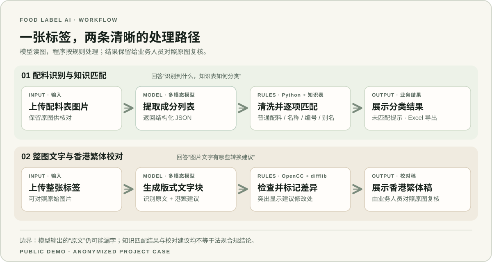

Label photo
Upload an ingredients list or the whole label; keep the original for comparison.
Project case · AI application · Hong Kong, China 项目案例 · AI 应用 · 中国香港
让食品标签，更容易检查。
From a label photo to a result you can check, look up and export. An AI application for import-business staff that connects multimodal recognition, structured knowledge and human review.
从一张标签图片，到可以核对、查询和导出的结果：把多模态识别、结构化知识和人工复核连接起来。
Upload an ingredients list or the whole label; keep the original for comparison.
Extract the ingredient list, or organise text blocks in reading order.
Look up names, codes and functions; show Traditional Chinese suggestions.
Check unmatched items and edited positions, then export a structured result.
This project / grew out of label checking / in a food import business. // The tool brings / ingredient extraction, / additive look-up / and Traditional Chinese proofreading / into a single screen, // so people spend less time / reading, searching and retyping by hand. //
这个项目围绕食品进口业务中的标签检查展开。工具将图片中的配料提取、添加剂资料查询和香港繁体校对集中在一个界面，目标是减少人工反复读取、查询和整理的工作。
I split the job / into two clear paths. // One answers / “what was recognised / and which knowledge record does it match”; // the other helps the user / see which Traditional Chinese / or wording changes are suggested. //
我将任务拆成两条明确的处理路径：一条回答「配料表中识别到了什么，对应什么知识记录」；另一条帮助用户查看「标签文字有哪些繁体或用语调整建议」。
Positioning: an aid to checking. Users compare the result with the original image; the tool does not make food-safety or regulatory compliance decisions.
产品定位：辅助检查。用户可以对照原图复核，工具不自动作出食品安全或法规合规结论。
I owned the whole project, / turned a business need / into a usable tool, / and handed it to the client’s / import-business staff. //
我亲自负责项目的全部工作，将业务需求转成可操作的工具，并交给客户方专门负责进口业务的人员使用。

After an upload, / the app calls a multimodal model / through DashScope. // The prompt asks only / for ingredient content — / excluding brands, marketing text / and nutrition tables — / and returns ingredient names / as a JSON array. // The program parses, / cleans and de-duplicates them, / then queries a local knowledge table. //
用户上传图片后，应用通过 DashScope 调用多模态模型。提示词只要求提取配料内容，排除品牌、广告、营养表等信息，并按 JSON 数组返回成分名称。程序解析、清洗和去重后，再查询本地知识表。
Matching runs / through common ingredients, / standard names, / E numbers, / aliases / and near candidates. // The screen shows / how each item matched / and which items did not, / and compiles ingredient, name, code, / function and notes / into an exportable Excel file. //
匹配依次处理普通配料、标准名称、E 编号、别名和近似候选。界面展示匹配方式及未匹配项，并将成分、名称、编号、功能和备注整理成可导出的 Excel 文件。
The model organises / titles, fields, paragraphs / and footers / in reading order, / returning both / the recognised original / and Traditional Chinese suggestions. // The program uses OpenCC / to check conversion differences, / and a text-diff algorithm / to highlight / the edited positions / in the suggested copy. //
模型按标签阅读顺序组织标题、字段、段落和页脚，分别返回识别原文与香港繁体建议。程序使用 OpenCC 检查文字转换差异，并通过文本差异算法突出显示建议稿中的修改位置。
The page keeps / the original image / and recognised text / for comparison; // what it produces / is a text-review copy / with a similar reading structure — / not a direct edit / of the package image. //
页面保留原图与识别文字供核对；生成的是阅读结构相近的文字校对稿，不是对原包装图片的直接修改。
| Module | Responsibility |
|---|---|
| Streamlit界面框架 | Upload, login, preview, results and file download上传、登录、预览、结果展示和文件下载 |
| Multimodal model多模态模型 | Image understanding, ingredient extraction, text structure and proofreading suggestions图片理解、成分提取、文本结构和校对建议 |
| Structured knowledge table结构化知识表 | Standard names, aliases, E numbers, functions and common ingredients标准名称、别名、E 编号、功能与普通配料 |
| Python · pandasPython · pandas | Cleaning, matching, classification and Excel export清洗、匹配、结果分类和 Excel 导出 |
| OpenCC · difflibOpenCC · difflib | Traditional Chinese conversion check and diff highlighting繁体转换检查和修改位置展示 |
The model handles / unstructured images, / while display fields / such as additive codes / and functions / come from local knowledge records. // That keeps / image understanding / separate from knowledge maintenance, / and makes the basis / of each match visible. //
模型处理非结构化图片，添加剂编号和功能等展示字段由本地知识记录提供。这样可以把图片理解与知识维护分开，也便于查看匹配依据。
A JSON interface / connects the model / and the program, / and errors are shown / for invalid responses / or no valid ingredients. // Unknown ingredients / appear as unmatched; // near matches / show a similarity score, / but that score / is not a business accuracy rate. //
应用通过 JSON 接口连接模型与程序，对非法响应和无有效成分等情况提示错误。未知成分显示为未匹配；近似匹配展示相似度，但该分数不代表业务准确率。
The current build / is a fixed-flow application / that combines / a multimodal model / with structured knowledge matching. // It has no / autonomous tool-planning agent, / and no RAG chain / that sends retrieved results / back to the model. // The point here / is to finish a specific checking task / and keep the result inspectable. //
当前实现是多模态模型结合结构化知识匹配的固定流程应用。它没有自主工具规划的 Agent，也没有把检索结果送回模型生成回答的 RAG 链路。这里的重点是完成具体校验任务，并让结果能够被检查。
以上为我对用户反馈的转述，不是逐字引述。目前未进行系统的前后耗时、准确率或 ROI 统计，因此不报告未经测量的节省比例。
The project ran / from requirement gathering / and implementation / to real use and feedback. // It let me carry over / process breakdown, / master-data organisation, / exception handling / and delivery discipline / from ERP implementation / into an AI application. //
这个项目完成了从需求梳理、技术实现到真实用户使用与反馈的过程。它让我能够将 ERP 实施中积累的流程拆解、主数据整理、异常处理和交付意识用于 AI 应用。
Image recognition / can miss characters, / and near names / can be mismatched; // the model’s “original text” / is not / an independently verified ground truth. // So the next focus / is a repeatable / evaluation and review mechanism. //
图片识别可能漏字，近似名称可能误匹配；模型输出的「原文」也不是独立验证过的真值。因此，后续重点是建立可重复的评测和复核机制。
These are / directions for later work — / not capabilities / already built / or results already measured. //
这些是后续改进方向，不作为已经实现的能力或已经测得的结果。
The GitHub example code / provides the application modules, / run instructions, / a synthetic knowledge-base generator / and offline tests. // Client brands, / client labels, / real knowledge material / and access credentials / are not included / in the public version. //
GitHub 示例代码提供应用模块、运行说明、合成知识库生成器和离线测试。客户品牌、客户标签、真实知识资料和访问凭据均未包含在公开版本中。
This page / is a static case description / and does not accept label uploads. // The Python app / must run in its own environment, / and image recognition / calls a model service / configured by the user. //
本页面为静态案例介绍，不接收标签上传。Python 应用需在独立环境运行，图片识别会调用使用者配置的模型服务。
The project date is April 2026, consistent with the original development record. I confirm the solo ownership and the real-use feedback; the technical description follows the project code.
项目时间为 2026 年 4 月，与原始开发记录相符。独立职责和实际使用反馈由我确认；技术说明依据项目代码。
This public write-up also adds dependencies, demo data, offline tests and several engineering fixes. Those changes are recorded separately from the historical implementation — see the code directory notes; public commits keep their actual commit dates.
Author: Alexis Tsui · Project date: April 2026 · Anonymised client case